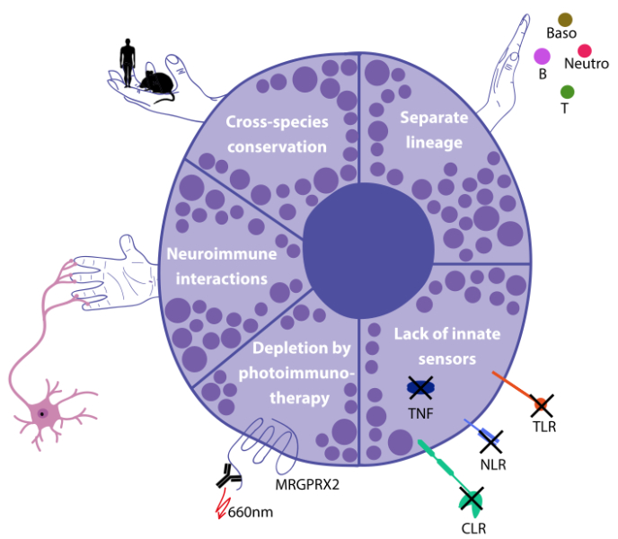
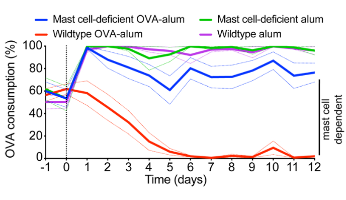
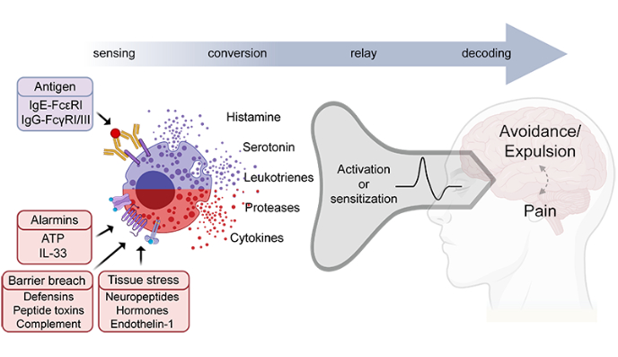

Science

Mast cells are neuroimmune sentinels
By generating a high-resolution proteomic atlas of primary human and mouse mast cells, we discovered that mast cells are molecularly distinct from classical innate immune cells. Rather than expressing canonical pathogen-sensing machinery, mast cells are enriched for proteins involved in neuroimmune communication. These findings suggest that mast cells are specialized tissue-resident sentinels evolved to interface directly with the nervous system at barrier surfaces.Read the paper: Plum et al., 2020

Mast cells drive antigen avoidance behavior
Why does the immune system induce behaviors such as nausea or food aversion? We discovered that mast cells actively promote antigen avoidance behavior. In free-choice behavioral assays, sensitized mice avoided antigen-containing food, whereas mice lacking mast cells or IgE failed to do so. Mucosal mast cells rapidly sensed ingested antigens and communicated with the nervous system—partly via leukotrienes—to prevent repeated exposure and chronic inflammation. This work provided the first direct experimental support for the toxin hypothesis of allergy.Read the paper: Plum et al., 2023

Mast cells convert immune and tissue signals to neural responses
Building on these findings, we propose that mast cells function as powerful signal converters that translate immune and tissue states into rapid, organ-specific neural responses. Mast cells integrate cues such as type 2 immune signals, tissue damage, and local inflammation, and convert them into protective reflexes including itch, pain, nausea, and avoidance. This neuroimmune communication framework redefines mast cells as central regulators of behavior and physiology, with broad implications for allergy, chronic inflammation, and neuroimmune disease.Read the Perspective: Plum et al., 2024